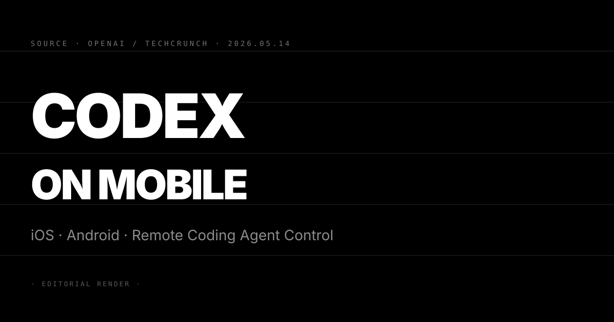
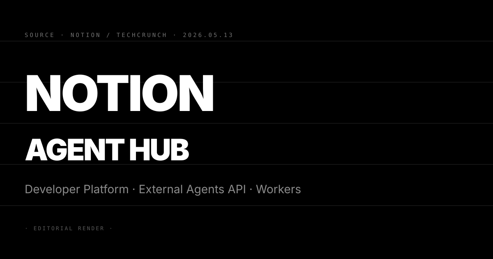
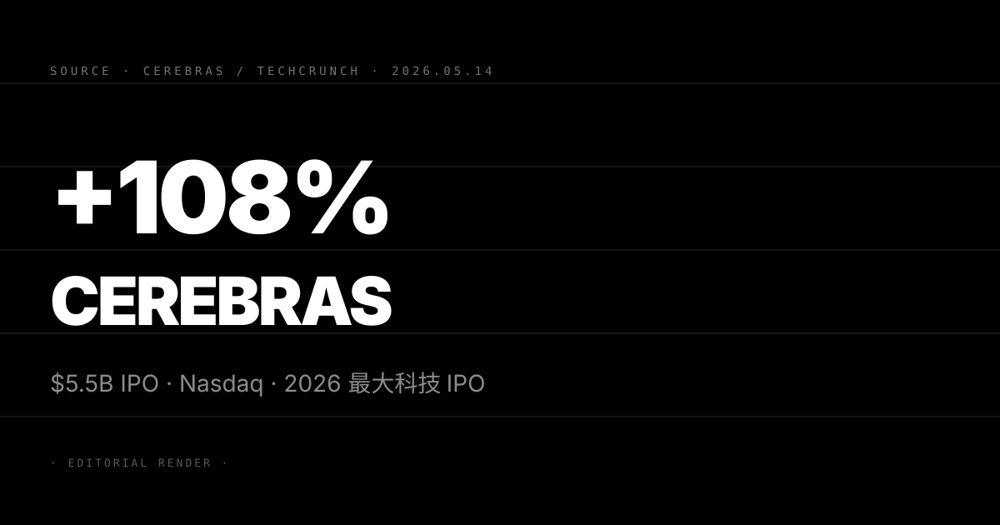

Pin · 手機不是用來寫 code 的，而是用來審批 Codex 在遠端機器上跑出來的結果。
OpenAI 5 月 14 日宣布 Codex 正式加入 ChatGPT 手機版，同步支援 iOS 與 Android，在所有方案免費預覽，包含 Free 與 Go 層。
這次的行動化並非「在手機上直接寫 code」。Codex 的實際運算仍發生在使用者事先設定好的環境裡，可以是本地 Mac mini，也可以是公司的遠端伺服器。手機扮演的角色是監控與審批介面：使用者可以切換 threads、查看輸出結果、審批指令、更換模型，或開啟新任務。Files、credentials、permissions、本地設定全部留在 Codex 執行的原機上，更新內容即時傳回手機，包括截圖、terminal 輸出、diff 比對與測試結果。
Windows 版的 Codex 桌面 app 與手機端的連接支援預告即將推出，目前僅支援已設定好環境的 macOS 與 Linux 場景。
第一，這條「手機 = remote control，機器 = 執行端」的架構定義了 agentic workflow 下一個普及形態。過去 coding agent 的使用場景綁定桌面終端，使用者必須坐在電腦前監控執行過程。Codex 行動化把監控與審批解耦，讓 async 工作流成為預設：agent 在背景跑，使用者出門、開會、通勤時從手機審批關鍵步驟。對讀者：這條架構會成為未來六個月其他 coding agent（Cursor、Windsurf、GitHub Copilot Workspace）的對齊目標，行動端 agent 審批介面的 UX 設計是下一個工程競爭點。
第二，免費方案包含 Codex 遠端監控入口，把 agentic coding 的門檻從付費訂閱拉到零。ChatGPT Free 方案此前對進階功能限制嚴格，Codex 行動版開放 Free 方案預覽是 OpenAI 把 agentic feature 當做用戶留存工具的最明確訊號。對讀者：判斷這條策略是否奏效的指標是 ChatGPT 六月月活增長率，若 Free 方案用戶因 Codex 行動化產生更高 session 頻率，OpenAI 會在 Q3 財報電話會議中拿這個數據作為 free tier 留存論證。
第三，Codex 行動版與昨日 Notion External Agents API 同日前後腳落地，兩者都把 Claude 和 Codex 列為首批接入對象，agent 互通基礎設施在一週內同步到位。Notion 把 Codex 列為 External Agents API 的預設支援 agent，而 Codex 行動版讓使用者可以在 Notion 任務頁面旁邊審批 Codex 的執行結果，兩條產品的工作流整合路徑比任何正式合作聲明都更快落地。對讀者：未來八週 OpenAI 與 Notion 的共同客戶會率先跑出「Notion task → Codex 執行 → 手機審批」的完整鏈路，這條使用案例的出現時間點是 agentic 工作流從 demo 到 default 的分水嶺。
三個看點：
(1) GitHub Copilot Workspace 2.0 在 5/19 GitHub Universe 必須公開行動端審批介面，否則在 Codex 行動版上線後形成可見的功能落差。GitHub Copilot Workspace 目前僅有桌面 web 介面，行動端無法接入 agent 執行環境。Codex 行動版上線後，使用 GitHub Copilot Enterprise 的開發者會開始對比兩套工作流的行動端體驗，微軟在 5/19 前發布行動端功能的壓力從這週起急速上升。對讀者：5/19 GitHub Universe 主 keynote 是否出現 iPhone / Android 示範畫面，是判斷微軟能否在六週內追平 Codex 行動版的關鍵訊號。
(2) Windows 版 Codex 桌面 app 的行動端連接功能一旦推出，Windows 企業用戶的 agentic 工作流採用率會出現結構性跳升。目前 Codex 行動版僅連接 macOS / Linux 環境，Windows 企業用戶（佔全球開發者約 55%）暫時排除在外。OpenAI 預告「即將推出」Windows 支援，對企業 IT 採購的含義是：跨平台 agentic 工作流的部署可行性窗口會在 Q3 打開，CTO 與工程 VP 級別的採購決策週期因此縮短。對讀者：追蹤 OpenAI 開發者更新日誌（developers.openai.com/codex/changelog），Windows 支援確認日期是 Q3 企業 agentic 工作流採購潮的起點信號。
(3) 反方觀點：「手機審批 agent 執行結果」的使用場景需要使用者對 coding agent 輸出有足夠判斷力，Free 方案用戶的實際採用率可能遠低於預期，行動化的實際影響力可能被高估。批評派的核心論點是：Codex 的 diff 審批、terminal 輸出判讀本質上需要技術背景，Free 方案的主力用戶（非開發者、學生、創意工作者）在手機端審批 Codex 輸出的摩擦遠高於宣傳所呈現的流暢度。對讀者：判斷行動版實際留存率的指標是三個月後 OpenAI 對外公布的 Codex 月活用戶數成長率，若成長主力來自付費方案而非 Free，行動化的普及效果會被重新定性。

Pin · Notion 不再只是筆記軟體，三個組件一次到位讓 workspace 成為 agent 執行與協作的地基。
Notion 5 月 13 日透過直播產品發表會推出 Developer Platform，包含三個核心組件。
第一個組件是 External Agents API，讓使用者把外部 agent 接入 Notion workspace，首批官方支援的 agent 包含 Claude（Anthropic）、Codex（OpenAI）、Decagon。API 採標準 OAuth 授權流程，任何符合規格的第三方 agent 都可接入，不限於官方列表。
第二個組件是 Notion Workers，一個 hosted 程式碼執行環境，讓開發者寫 code 並透過 CLI 部署在 Notion 的 secure sandbox 上運行。Workers 對開發者免費開放，期限至 2026 年 8 月。
第三個組件是 Database Sync，透過 Workers 把任意 API 資料源同步進 Notion 資料庫，支援的資料源包含 Salesforce、Zendesk、Postgres 等企業常見系統。
Notion 同時公布數據：2 月推出 Custom Agents 功能後，三個月內使用者已建立超過 100 萬個 agents，這個速度快過 Notion 過去任何功能的採用曲線。Notion 創辦人 Ivan Zhao 在發表會中把這套組合定位為「人與 agent 共同協作的基礎設施」，明確宣示 workspace 的角色從被動容器轉向主動協作中樞。
第一，Notion 是第一家達到億級月活的主流 SaaS 把「agent orchestration layer」作為核心產品發布，此舉定義了知識工作 SaaS 的下一個產品架構標準。過去 SaaS 廠商對 AI agent 的策略是在既有產品加入 AI 功能按鈕；Notion Developer Platform 的邏輯相反：把 workspace 變成 agent 的工作入口，AI 功能不是加進去的，而是透過 API 被引進來的。對讀者：Asana、Monday、Confluence、Linear 四家協作 SaaS 的產品路線圖會被這個發布強迫重寫，預期六週內至少兩家發布類似的「agent orchestration」宣言。
第二，External Agents API 把 Claude 跟 Codex 同時列為首批接入對象，等於讓 OpenAI 與 Anthropic 在 Notion workspace 裡展開可被量化對比的真實部署競爭。企業使用者在同一個 Notion workspace 裡可以同時接入 Claude agent 和 Codex agent，並在實際工作任務中直接比較兩者的輸出品質與成本；這是 frontier lab 第一次在真實工作環境中被 SaaS 平台強制放進同一個競技場。對讀者：Notion 的 agent 使用率數據會成為業界最有參考價值的中立 benchmark，預期 2026 Q4 Notion 會發布年度 agent 使用報告，直接影響企業 AI 採購決策。
第三，Database Sync 配合 Workers 把企業核心資料源（Salesforce、Zendesk、Postgres）拉進 Notion，首次讓非技術用戶能用自然語言 query 跨系統企業資料。過去企業資料整合需要 ETL 工程師與 data pipeline 維護，Database Sync 把這個步驟封裝成 no-code 設定；對 Salesforce、ServiceNow、HubSpot 的長期威脅是：企業用戶開始把 Notion 當做輕量 data warehouse 使用，主系統的資料黏性會被侵蝕。對讀者：判斷 Database Sync 對主系統黏性的衝擊時間表，關鍵指標是 2026 年底 Salesforce 的 enterprise contract 續約率是否出現可量化的下滑。
三個看點：
(1) Notion Workers 免費至 8 月這條定價策略是刻意設計的採用期，8 月之後的計費方式會決定這套平台是否能留住開發者生態。免費期結束後，Workers 的計費邏輯尚未公布；開發者在免費期間建立的工作流一旦遷移成本過高，就會被鎖定，但若 Notion 定價超過市場預期，開發者會出現大規模退出。對讀者：追蹤 Notion 在 8 月前後的開發者計費公告，這是判斷 Workers 長期生態能否成立的最關鍵節點。
(2) 100 萬個 custom agents 在三個月內建立的數字很快，但品質與留存率是決定 Notion agent 生態深度的關鍵，而非 raw count。比較基準：Zapier 在推出 AI automation 功能的前三個月有類似的新建 workflow 爆量，但六個月後 active workflow 留存率低於 20%。Notion agents 是否落入同樣的「建了不用」模式，需要等 Notion 公布月活 agent 數量（而非累積建立數量）。對讀者：要求 Notion 在下一輪投資人更新或產品 blog 中公布「monthly active agents」數據，這個數字才是衡量平台真實使用深度的核心指標。
(3) 反方觀點：Notion 的 agent orchestration 定位可能在企業 IT 採購審批中遭遇「消費者 SaaS 信任問題」，外企 IT 部門不一定允許 Notion 成為連接 Salesforce 與 Zendesk 的中介層。批評派的核心論點是：Notion 的企業安全合規認證（SOC 2 Type II、GDPR、HIPAA）在部分垂直領域仍未達到 IT 部門對「核心資料整合中介」的要求，Database Sync 的目標客群（金融、醫療、政府）正是 Notion 企業認證最薄弱的區域。對讀者：判斷企業採購阻力的關鍵指標是 Notion Enterprise 2026 Q3 合約中包含 Database Sync 條款的比例，若低於 30%，agent hub 定位的落地速度會被迫重估。

Pin · 定價 185 美元，盤中峰值 386 美元，Cerebras 用一天交易給 AI 算力賽道打入 564 億美元估值背書。
Cerebras Systems 5 月 14 日在 Nasdaq 掛牌，成為 2026 年迄今最大科技 IPO，也是自 Uber 2019 年上市以來美國最大科技 IPO。
IPO 定價 185 美元，遠高於原始詢價區間 115 至 125 美元，也超過後來上調的區間 150 至 160 美元。發行 3000 萬股，募資 55 億美元（5.55 billion）。以 185 美元定價計算，完全稀釋估值約 564 億美元。
第一天的交易走勢經歷大起大落。開盤報 350 美元，盤中最高觸及 386 美元，較發行價上漲 108%，吸引大量散戶追捧。尾盤回落，收報 311 美元，漲幅收斂至 68%，市值約 950 億美元。
Cerebras 的核心產品是 WSE（Wafer Scale Engine）晶片，號稱全球最大的 AI 晶片，面積是 Nvidia H100 的 57 倍，在 AI 推論速度上以 18 倍 throughput 宣傳對標 Nvidia。公司主要客戶包含多家 frontier lab 與企業 AI 訓練業務。此前 Cerebras 的 IPO 計劃曾因美國監管機構對其最大股東 G42（阿聯酋）持股比例展開安全審查而延遲逾一年。
第一，Cerebras IPO 的資本市場反應給 AI 算力賽道打入一個新估值基準，Nvidia 之外的算力選項第一次拿到規模化的公開市場認可。過去非 Nvidia 算力廠商（AMD、Intel Gaudi、Groq、Trainium）的市場份額論述以技術指標為主，缺乏可量化的資本市場反饋；Cerebras 的 IPO 成功把「Nvidia 競爭者是否具備獨立估值邏輯」這個問題從討論搬上了財務報表。對讀者：Cerebras 上市後六個月的持股結構變化（機構 vs. 散戶比例）是判斷資本市場對非 Nvidia 算力廠商長期信心的關鍵指標。
第二，G42 持股安全審查問題雖未阻止 IPO，但未來每一季的業務拓展都會被美國監管機構的持續審查框架限制，這條隱形天花板是 Cerebras 估值的長期折扣因子。G42 是阿聯酋最大的 AI 公司，與中國科技業有既往投資關聯；美國 CFIUS（外國投資委員會）的持續審查不僅影響 Cerebras 的股權結構，也限制其與聯邦政府及五角大廈客戶的合約空間，而這正是 Nvidia 最重要的營收增長引擎之一。對讀者：觀察 Cerebras 未來 12 個月的客戶名單是否能打入政府採購圈，是判斷監管天花板是否實質衝擊估值的核心指標。
第三，IPO 之後 Cerebras 的 WSE 晶片是否能在 Q3 / Q4 拿下足夠的 frontier lab 新合約，是區分「IPO 行情」與「長期競爭者」的唯一試金石。過去 AI 晶片新秀（Graphcore、Habana Labs、Cerebras 第一代）在公開市場前的估值故事都比上市後的實際業務擴張來得更快；Cerebras 這次規模更大，但同樣面臨「產能限制」與「CUDA 生態系鎖定」兩道護城河，這兩道護城河在 Nvidia 三年內都不太可能被動搖。對讀者：Cerebras 在 2026 年底對外公布的「合約客戶數成長率」是判斷其估值是否可持續的最直接指標，對比今日完全稀釋估值 564 億美元，若年底客戶成長低於 40%，估值泡沫質疑將成主流。
三個看點：
(1) 2026 科技 IPO 季被 Cerebras 開了一個強勁的開場，預期 Groq、Recursion Pharmaceuticals AI 部門、Perplexity 三家會在 Q3 跟進 IPO 窗口，Cerebras 的盤中 108% 漲幅會成為各家承銷商的參考定價標準。IPO 市場的示範效應顯著：2021 年 Robinhood 上市後引發一波 fintech IPO 潮，同樣邏輯下，AI 基礎設施賽道的 IPO 潮大概率在六到九個月內成形。對讀者：追蹤 Morgan Stanley 與 Goldman 在 5 月底對 AI 基礎設施 IPO 管線的媒體吹風，這是 Q3 IPO 潮是否成形的最早預警信號。
(2) Cerebras 收盤跌回 311 美元（較盤中峰值縮水 19%）顯示散戶追高但機構獲利了結的結構，六個月後的股價才是真實估值的反映。比較基準：ARM 2023 年 IPO 首日漲 24%，三個月後回落至 IPO 價附近，六個月後在 AI 算力敘事帶動下重回高位；Palantir 2020 年 IPO 首日盤後大漲，然後一路低於 IPO 價超過一年。Cerebras 的路徑取決於前兩個季度的財報能否兌現估值倍數。對讀者：2026 Q3 財報（預計 8 月）是第一個兌現節點，判斷 Cerebras 實際 revenue 是否支撐 564 億完全稀釋估值，追蹤 PS ratio 是否回歸到 Nvidia 的 20–25x 區間。
(3) 反方觀點：Cerebras 的 WSE 架構在訓練與密集推論場景具有速度優勢，但在邊緣部署、低耗能場景、小模型推論三個市場快速增長的區域上 WSE 的架構反而是劣勢，長期 TAM 可能被高估。批評派的核心論點是：frontier 模型規模在 2026 Q4 開始往小型高效方向走（Anthropic Claude Haiku 4.5、OpenAI GPT-Mini 系列、Gemini Nano），這條趨勢讓「最大晶片最快推論」的 Cerebras 核心優勢敘事跟市場走向出現結構性背離。對讀者：觀察 Cerebras 在 2026 下半年是否宣布推出針對 edge / mobile inference 的新產品線，若無，其 TAM 敘事的說服力會被業界重新審視。